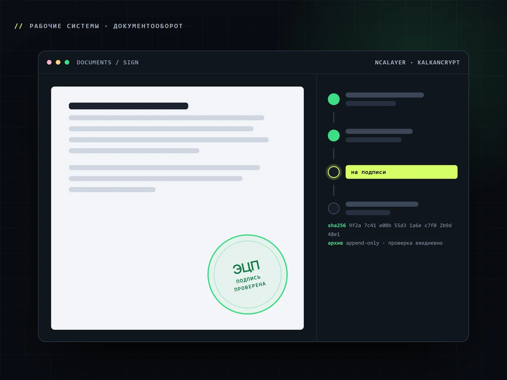
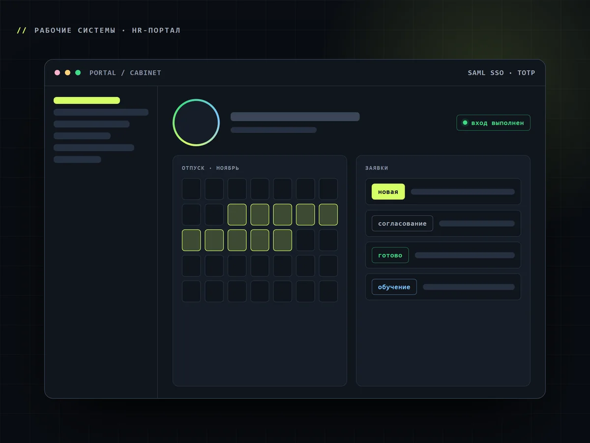
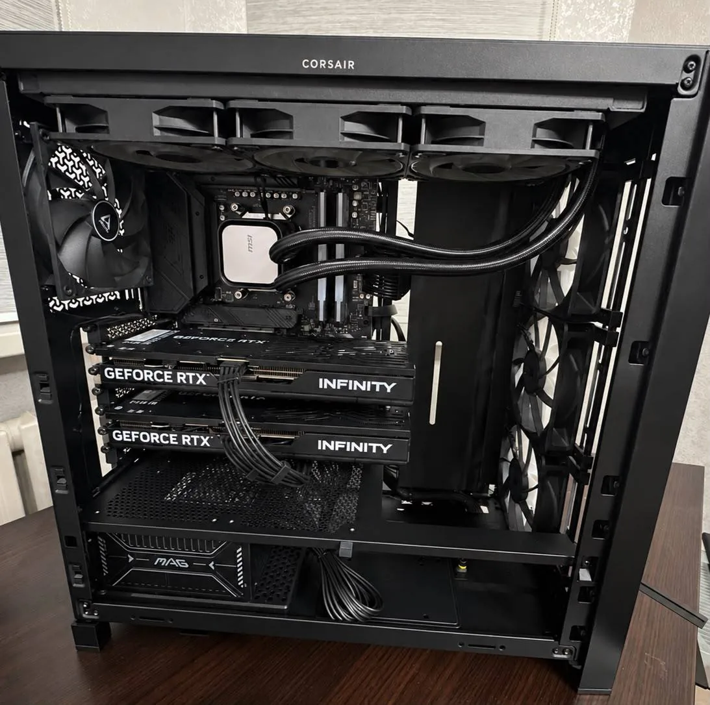
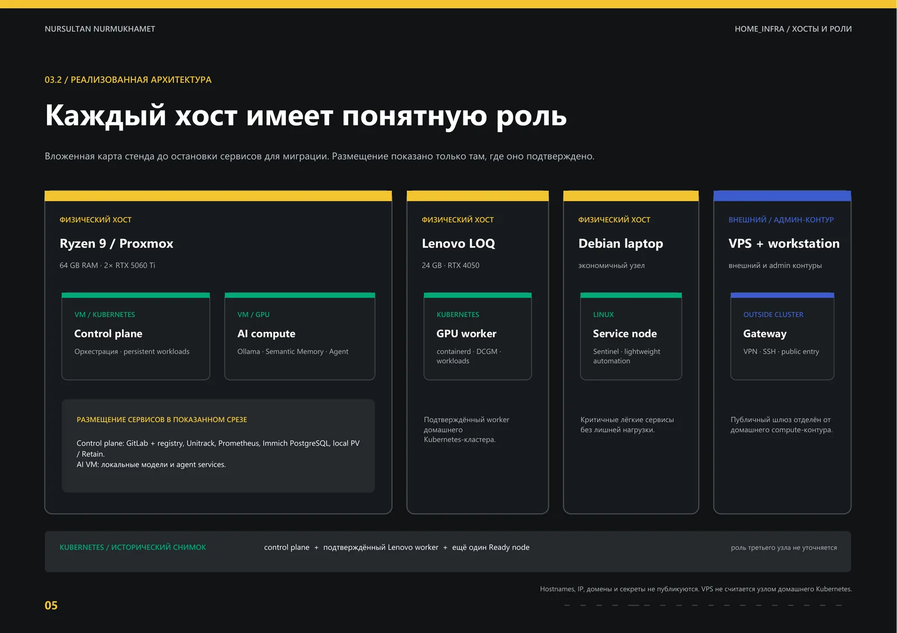
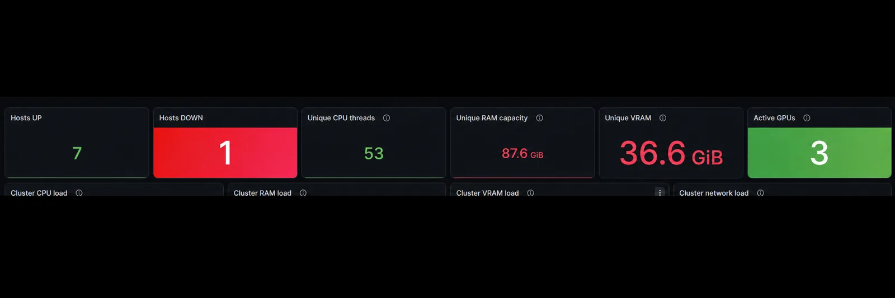
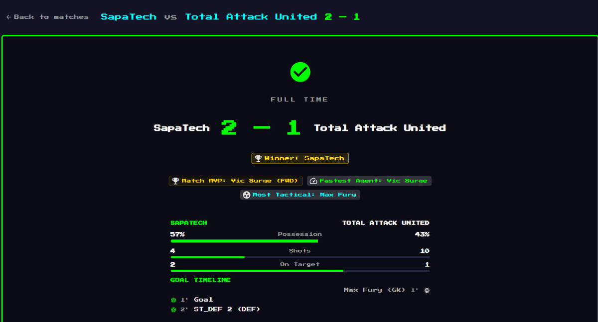

nn.
nursultannurmukhamet.github.io/portfolio
Backend / Infrastructure Engineer
Проектирую backend, разворачиваю инфраструктуру и проверяю, что всё восстанавливается после сбоев.
29 предметов в пяти категориях: открой любой, чтобы посмотреть подробнее.

Рабочие системыКадровые документы подписываются электронной подписью и имеют юридическую силу.

Рабочие системыЛичный кабинет сотрудника: отпуска, заявки, обучение, документы и единый вход.

ЖелезоRyzen 9 9950X, две RTX 5060 Ti, 64 ГБ DDR5. Хост Proxmox, собран вручную.

Инфраструктураkubeadm, Calico, MetalLB, NGINX Ingress, Argo CD. Карта хостов и ролей.

ИнфраструктураФизика, Linux, Kubernetes и GPU в одной картине.

Личные проектыПять AI-агентов играют в футбол на модели Amazon Nova Micro.
// нажмите на любой предмет: подробности, стек, соседи по полке
nn.
Открыть инвентарь
nursultannurmukhamet.github.io/portfolio
Резюме (PDF)·GitHub·Telegram
Нурсултан Нурмухамет · Backend / Infrastructure Engineer · 2026